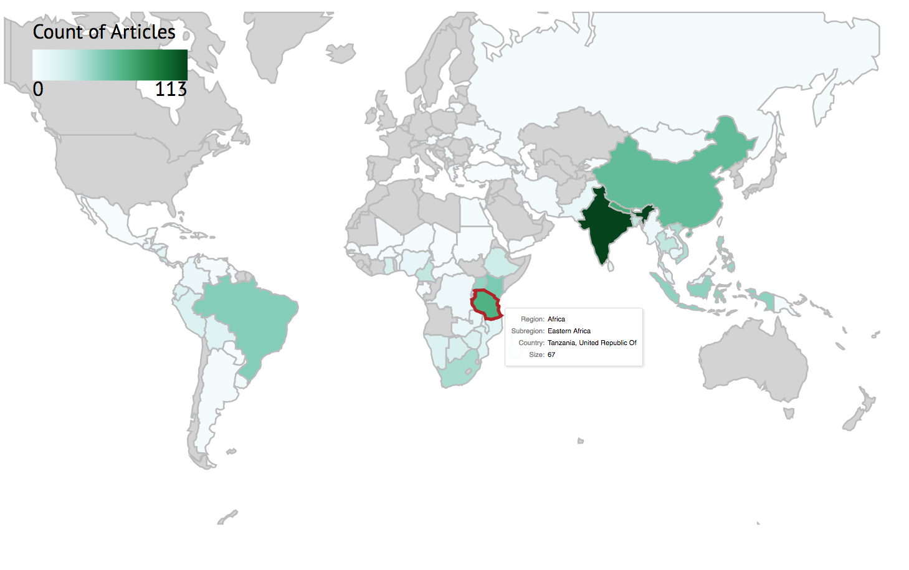

10. Synthesis: visualisations
This session will introduce common ways in which systematic review and map results can be visualised. Visualisations will be described that help to display the methods used in the review, the nature of the evidence identified, the results of assessments of relevance and validity, and any synthesis of study findings. Specific examples will include flow diagrams, evidence atlases, heat maps, pivot tables/charts, and forest plots. The session will include a practical exercise trying out some recent developments in software for visualising systematic review and map outputs.
Learning objectives:
- To understand the importance of visualisations in systematic reviews and maps
- To be able to interpret and know how to reproduce common types of evidence visualisations
- To be aware of examples of specific software for visualising evidence
To begin, watch the following presentation:
You can find the lecture handouts here.
Next, read the results section of the following systematic review on grazing impacts in temperate and boreal protected forests, paying close attention to the visualisations:
In addition, if you're interested in meta-analysis and quantitative synthesis, you may want to check out this paper on visualising meta-analyses:
Practical exercise
In this practical, you will take a look at several different forms of data visualisation. This exercise involves a bit of reading and looking at examples.
a) Flow diagrams
One of the most informative ways of describing the methods used in your systematic review or map and the fate of the evidence you identified is a flow diagram. Review flow diagrams detail the volume of evidence proceeding through each stage of the review process so taht the reader can easily understand the main methods used, how much research was identified, and how much was retained in the final synthesis. Here's an example of a flow diagram that conforms to the PRISMA reporting standard (click on the image to see the review it came from).

Various resources are available to help you to fill in a flow diagram for a systematic review or map. Another set of reporting standards alongside PRISMA is ROSES (RepOrting standards for Systematic Evidence Syntheses). The developers of ROSES have provided an editable flow diagram for systematic reviews and systematic maps. You can access it here.
Download the ROSES flow diagram for systematic reviews using the link above, and fill it in with the following information from a recent systematic review:
- Search results across all databases: 9,300
- Records from other search resources: 62
- Duplicates: 7,410
- Excluded at title screening: 1,334
- Excluded at abstract screening: 242
- Inaccessible full texts: 15
- Full texts not found: 10
- Excluded at full text screening: 204
- Excluded (no relevant population): 32
- Excluded (no relevant intervention): 47
- Excluded (no relevant wrong comparator): 69
- Excluded (no relevant outcome): 25
- Excluded (no relevant study design): 31
- Grey literature records (screened to full text online): 12
- Articles included in the review: 110
- Studies included in the review: 115
- Excluded at critical appraisal: 21
- Studies included in meta-analysis: 54
- Studies not included in meta-analysis (insufficient data): 40
Once you've had a go at filling the flow diagram in, download the model answers here to compare your work. How did you do?
b) Descriptive plots/tables
It's pretty likely that you've already produced countless figures and tables for data that you have collected or analysed. We won't spend a lot of time on this part of the practical, but it's worth spending some time looking through a few example systematic reviews to get a feel for what kind of plots are often reported in reviews. Check out some of the following examples:
c) Databases
Systematic mapping produces interactive databases of evidence as a key output, but databases of studies can be really useful for systematic reviews, too. Typically, these would be spreadsheets consisting of studies as different lines, and information relating to various aspects of the study design and PICO elements in different columns. Databases can be made interactive by ensuring some columns include consistently reported categorical and numerical data that can be easily 'filtered' and analysed/summarised quantitatively.
Take a look at the following examples of review databases (including those from systematic maps) and consider how they are user-friendly and interactive (and perhaps how you might make them even more interactive).
d) Heat maps
As you learnt in the presentation, heat maps are cross tabulations of categorical variables, showing the volume or strength of evidence included in the review (typically the number of studies belonging to each pair of codes). These visualisations can be really important in identifying knowledge gaps and clusters. Heat maps need categorical variables because we need a discrete (and manageable) number of groups across which we can sum the number of studies. For quantitative variables, figures are better suited visualisations.
Heat maps can also visualise a third variable by using shapes and colours, for example in this bubble plot that displays the type of study (impact evaluation, high/medium/low confidence systematic reviews, and systematic review protocols). Click on the image below to visit the evidence and gap map produced by 3ie to learn more.
Heat maps can be constructed manually, but this can be quite labour intensive. Instead, reviewers may want to use simple-to-use tools to design and construct heat maps. Perhaps the most familiar tool will be pivot tables. These interactive tools allow you to easily select and change which variables to display.

To read more about pivot tables, check out these tutorials for Google sheets and Excel.
Take some time to examine the pivoit table in this systematic map database here. Which variables are easier to display in a heatmap? Can you think of ways to improve the visualisation of some of the variables by changing how they are coded?
You can also produce heat maps easily with the free online tool EviAtlas.
e) Evidence atlases
Evidence atlases are visualisations of studies in a systematic review or map across geographical space. They are particularly useful for topics where the spatial context is believed to be particularly important. Evidence atlases need all studies to have information on their national/regional location, or specific latitude and longitude: this information can then be used to place studies into regional blocks:

or exact locations:
The real advantage of evidence atlases becomes clear when they are made interactive. This allows the user to zoom in and out on a map, investigate details of individual studies, and even manipulate the visualisations themselves to tailor the way information is displayed (for example by colouring study icons by publication year). Click the image below to explore the interactive evidence atlas.
f) Conceptual models/Logic models
Conceptual models (also known as logic models and theories of change visualisations) are vital tools for trying to understand how complex systems function, parcitularly where reviewers are interested in how multiple contextual factors affect a cause-effect relationship. They help to identify important influencial factors that should be included in assessments of all studies and to get an overview of a complex system. Click on the image below to visit the evidence and gap map it comes from.
g) Forest plots
Forest plots are the main means by which systematic reviewers visualise the results of meta-analyses. They display the effect size (usually squares where the size corresponds to its weight, see below) and a measure of variability (usually horizontal lines, see below) of each individual study in a meta-analysis, along with an overall summary effect and, typically, 95% confidence intervals (usually a diamond, see below):
Forest plots usually include a line of no effect (a full line in the example above) and a line showing the overall effect estimate for the analysis (a dotted line in the example above). Where study variabilities overlap the line of no effect, the individual study would find no significant effect on its own. Despite this (as demonstrated above), when analysed together, the body of evidence can show a significant relationship.
Forest plots can be suplemented with other visualisations for meta-analysis results, including meta-regressions that display effect sizes across a continuous independent variable:
So you have now spent some time thinking about a variet of different ways to visualise different aspects of the systematic review and mapping process and findings. In the next session we'll spend some time on how we actually conduct the analyses in narrative, qualitative and quantitative synthesis.
Move to the next module!